Depuis 1987
Le catalogue.
Plus de 150 ouvrages, tous conçus selon le même principe : aucun compromis sur la matière. Voici une sélection, organisée par univers.
Paris — Patrimoine & histoire

I
Le Paris d'Haussmann
Patrice de Moncan

II
Charles Marville — Paris photographié au temps d'Haussmann
Beau livre photographique
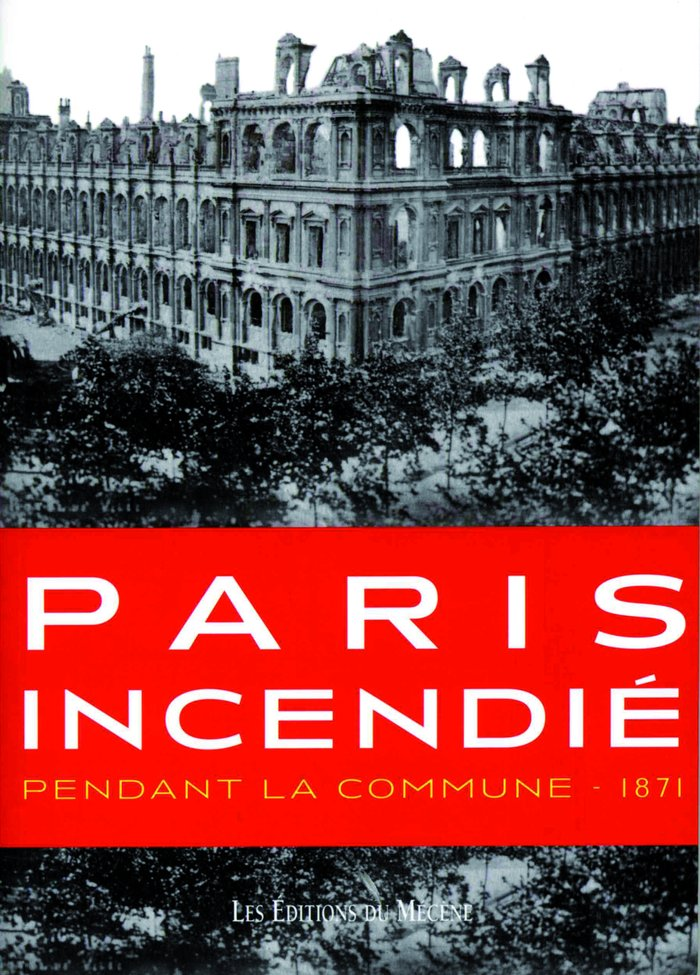
III
Paris Incendié pendant la Commune
1871
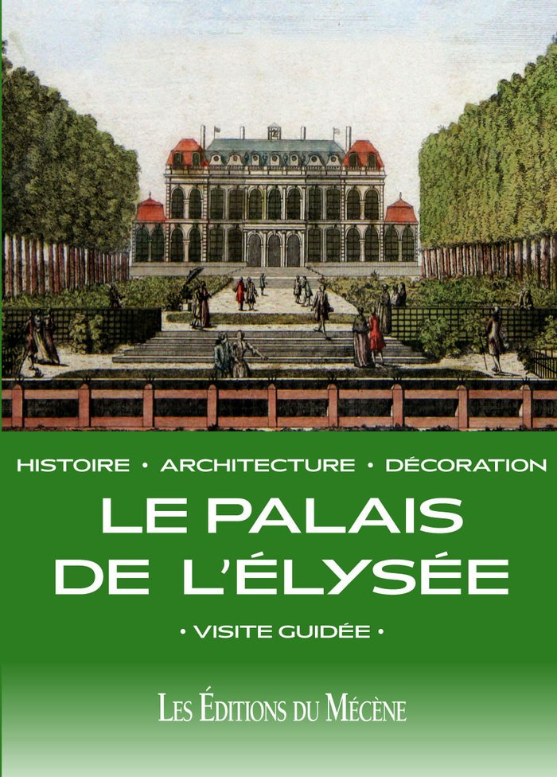
IV
Le Palais de l'Élysée
Histoire, architecture, décoration

V
Paris — Les Jardins d'Haussmann
Patrice de Moncan
Les passages couverts
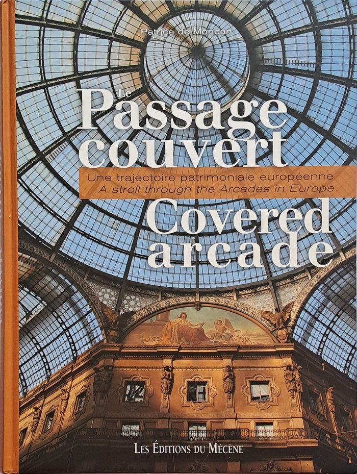
VI
Le Passage couvert / Covered Arcade
Édition bilingue français-anglais
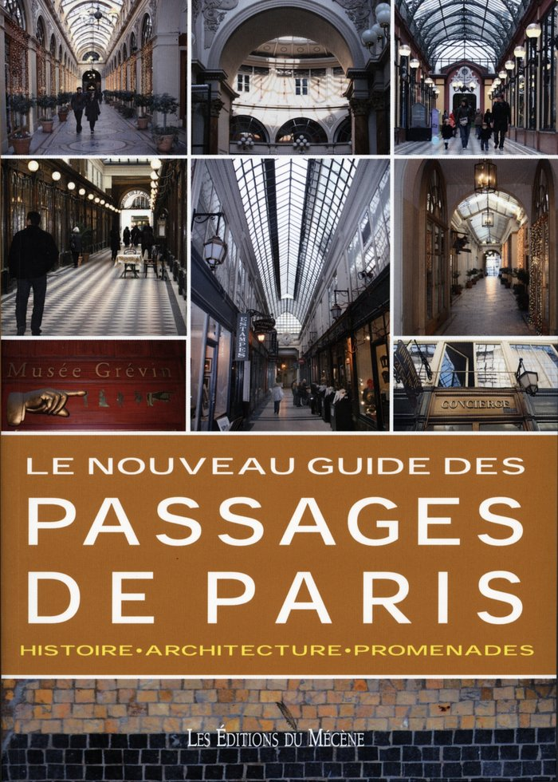
VII
Le Nouveau Guide des Passages de Paris
Histoire, architecture, promenades
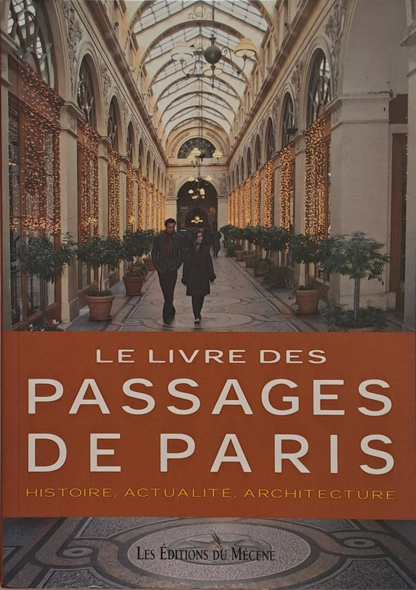
VIII
Le Livre des Passages de Paris
Histoire, actualité, architecture
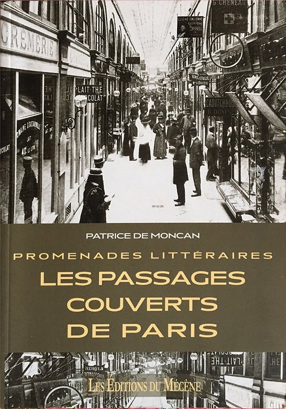
IX
Promenades Littéraires dans les Passages Couverts de Paris
Balzac, Baudelaire, Hugo, Nerval, Zola…
Art & objets
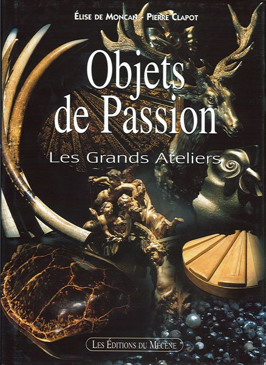
X
Objets de Passion — Les Grands Ateliers
Élise de Moncan, Pierre Clapot
XI
Les Puces de Paris — Saint-Ouen
Luc Fournol
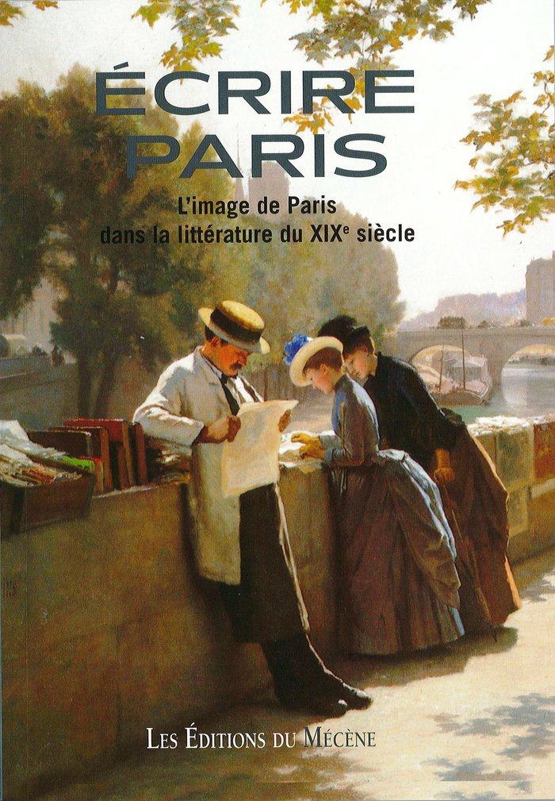
XII
Écrire Paris — L'image de Paris dans la littérature du XIXe siècle
Essai littéraire
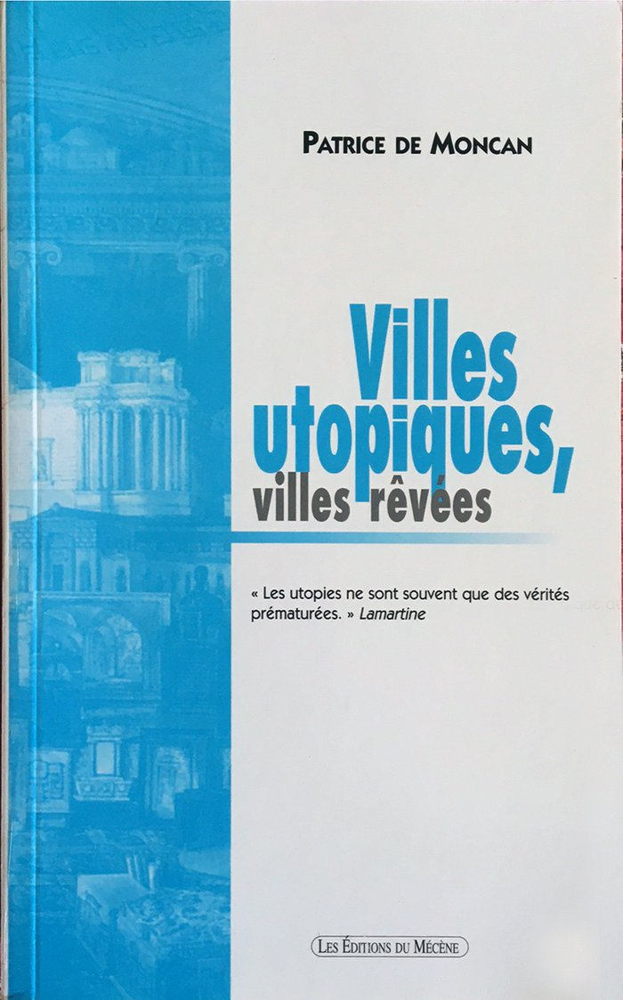
XIII
Villes utopiques, villes rêvées
Patrice de Moncan
Co-éditions institutionnelles
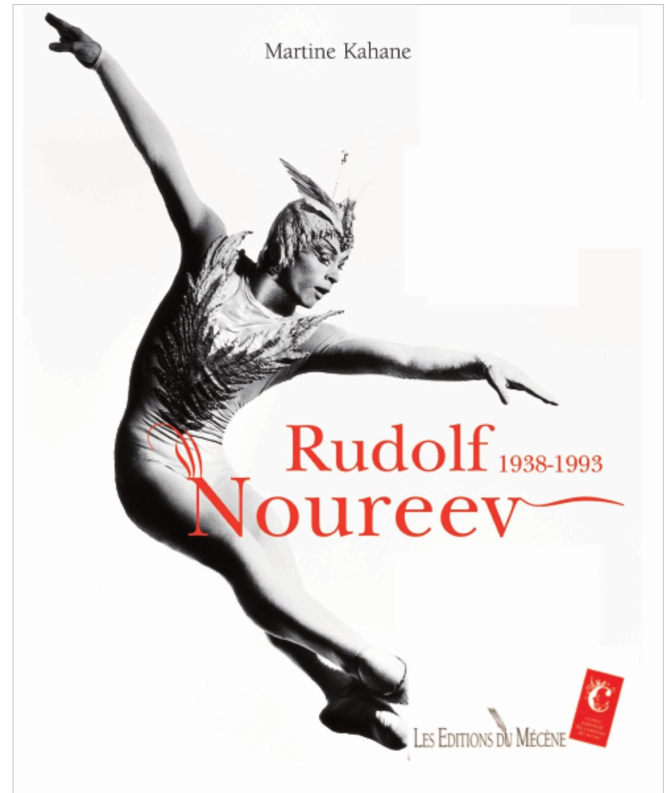
XIV
Rudolf Noureev, 1938–1993
Coédition CNCS — édition bilingue
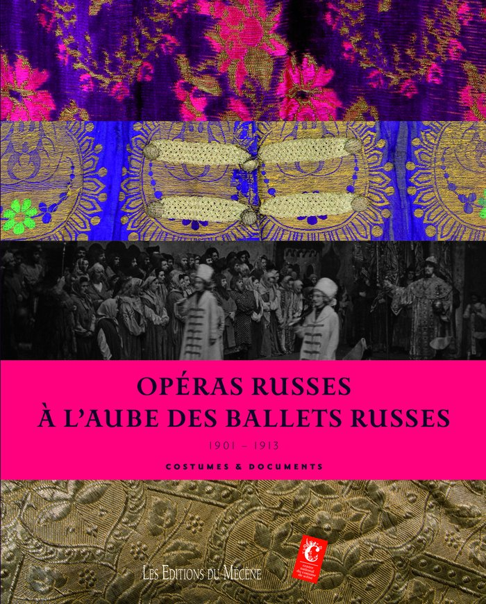
XV
Opéras russes à l'aube des Ballets russes
Coédition CNCS — 1901-1913
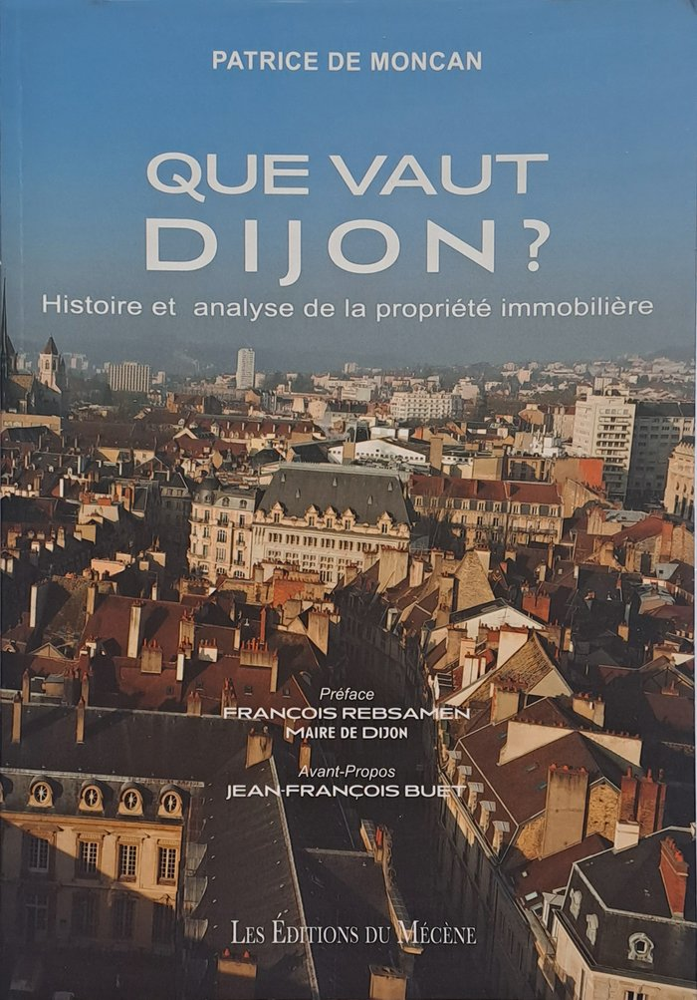
XVI
Que vaut Dijon ?
Préface François Rebsamen, maire de Dijon

XVII
Que vaut Strasbourg ?
Partenariat FNAIM
Éditions d'entreprise
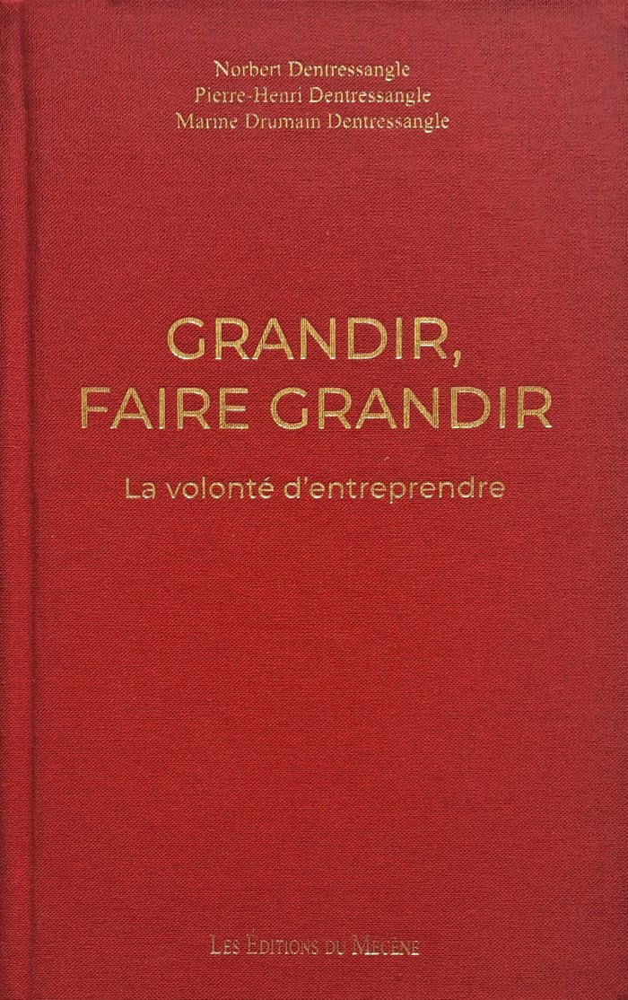
XVIII
Grandir, Faire Grandir — La volonté d'entreprendre
Famille Dentressangle
Et une trentaine d'autres titres — sur demande, ou lors d'un rendez-vous à Ravières
Votre projet
Un ouvrage à venir, ou une réédition à parrainer ?
Plusieurs titres de référence sont republiés en 2026 — Paris Avant-Après Haussmann, Le Guide des Passages de Paris, 1910, la Grande Crue de Paris. Votre entreprise peut en être mécène.
Nous écrire →